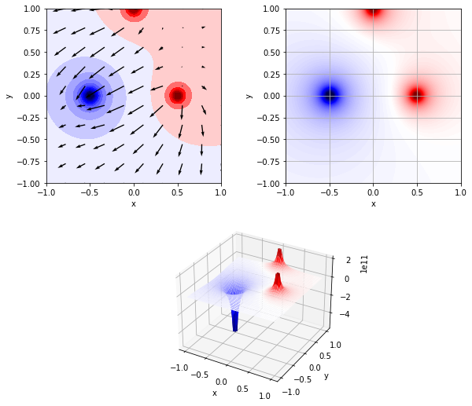

電場をプロット
Contents
電場をプロット#
import numpy as np
import matplotlib as mpl
import matplotlib.pyplot as plt
from mpl_toolkits.mplot3d import Axes3D
class EField:
def __init__(self, x=None, y=None):
self.K = 9.0e+9
# initialize the region of the electoric field
if not(x):
x = (-1, 1)
if not(y):
y = (-1, 1)
# e-potential
self.xrange, self.yrange = x, y
self.x, self.y = np.meshgrid(np.linspace(
*x, (x[1] - x[0])*50), np.linspace(*y, (y[1] - y[0])*50)) # generate meshgrid
self.r = np.sqrt(self.x**2 + self.y**2) # distance from Origin
self.potential = self.r * 0
# e-field
self.x_field, self.y_field = np.meshgrid(np.linspace(
*x, (x[1] - x[0])*5), np.linspace(*y, (y[1] - y[0])*5))
self.r_field = np.sqrt(self.x_field**2 + self.y_field**2)
self.fields = [self.r_field * 0, self.r_field * 0] # x -> u, y -> v
def add_charge(self, position, Q):
# e-potential
d = np.sqrt((self.x - position[0])**2 + (self.y - position[1])**2)
e_potentioal = self.K * Q / d # calculate e-potential
# mask
lim = e_potentioal[d < 0.05][0]
if lim > 0:
e_potentioal = np.clip(e_potentioal, None, lim)
else:
e_potentioal = np.clip(e_potentioal, lim, None)
self.potential += e_potentioal
# e-field
d_field = np.sqrt(
(self.x_field - position[0])**2 + (self.y_field - position[1])**2)
e_fields = [self.K * Q * (self.x_field - position[0]) / (d_field**2),
self.K * Q * (self.y_field - position[1]) / (d_field**2)]
length = np.sqrt(e_fields[0] ** 2 + e_fields[1] ** 2)
e_fields = [f / length for f in e_fields]
self.fields[0] += e_fields[0]
self.fields[1] += e_fields[1]
図の描画#
x, y = (-1, 1), (-1, 1)
f = EField(x=x, y=y)
f.add_charge((0.5, 0.), 1.0)
f.add_charge((-0.5, 0.), -3.0)
f.add_charge((0., 1.0), 1)
# make Figure
fig = plt.figure(figsize=(10, 9))
ax1 = plt.subplot2grid((2, 2), (1, 0), colspan=2, projection='3d', xlabel="x", ylabel="y")
ax2 = plt.subplot2grid((2, 2), (0, 1), xlabel="x", ylabel="y")
ax3 = plt.subplot2grid((2, 2), (0, 0), xlabel="x", ylabel="y")
# norm
norm = mpl.colors.TwoSlopeNorm(vcenter=0.0)
cmap = plt.cm.seismic
# ax1
ax1.plot_surface(f.x, f.y, f.potential, cmap=cmap, norm=norm)
# ax2
ax2.imshow(f.potential, interpolation='bilinear', cmap=cmap, norm=norm, origin="lower", extent=[-1.0, 1.0, -1.0, 1.0])
ax2.grid()
# ax3
ax3.contourf(f.x, f.y, f.potential, 20, cmap=cmap, norm=norm)
ax3.quiver(f.x_field, f.y_field, f.fields[0], f.fields[1], scale_units='xy', scale=10)
ax3.set_aspect("equal")
plt.show()
